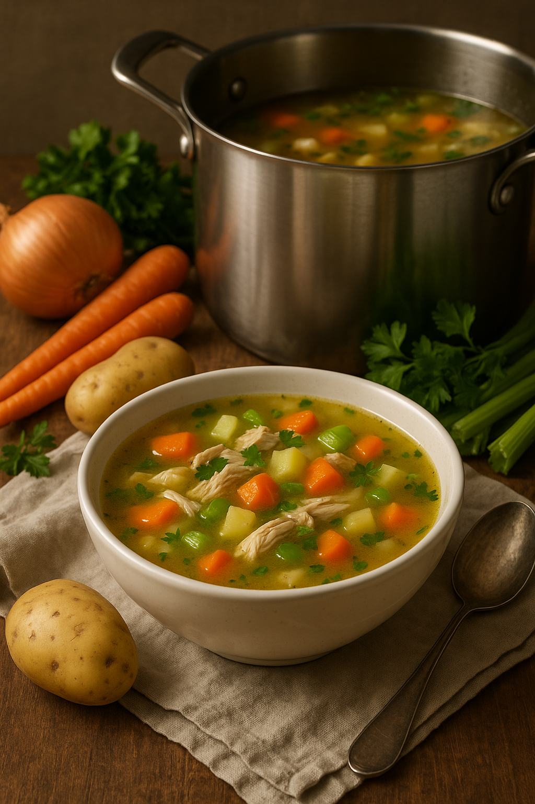

Description
This homemade turkey soup is a nourishing, full-flavoured way to make the most of your Thanksgiving leftovers. Starting with the turkey carcass, the bones are simmered slowly with water, onions, garlic, and seasonings to create a rich, savoury bone broth that’s packed with depth and nutrition. This slow process extracts the natural flavours and gelatin from the bones, forming a golden, hearty base that sets this soup apart from store-bought versions.
Once the broth is strained, it’s loaded with bite-sized pieces of leftover turkey, chopped celery, carrots, onion, and your choice of rice or noodles for a complete, satisfying meal. Lightly seasoned with poultry herbs and a dash of salt and pepper, this soup brings warmth and comfort in every spoonful. It’s an easy, budget-friendly recipe that turns scraps into something soul-soothing—perfect for chilly evenings and an ideal way to reduce waste while making something delicious from scratch.
Ingredients:
- 1 picked-over turkey carcass
- 1 1/2 cups leftover stuffing
- 1 onion, peeled and diced
- 2 carrots, peeled and sliced
- 2 celery stalks, chopped
- 1 tablespoon poultry seasoning
- 1 teaspoon ground sage
- 2 bay leaves
- 2 1/2 quarts (2.3L) chicken broth
- 1 cup water, or as needed
- 1/2 teaspoon garlic salt, or to taste
- ground black pepper to taste
- 2 cups (uncooked) regular long-grain white rice
- 1x 16 ounce package frozen green peas
can replace fresh carrots and frozen peas with frozen peas and carrots or vegetables of your choice.
Directions
- Place turkey carcass in a large, deep pot. Add stuffing, onion, carrots, celery, poultry seasoning, sage, and bay leaves.
- Pour in chicken broth. Add additional water if needed to cover. Bring to a boil over medium-high heat. Reduce heat to medium and simmer, skimming off any foam, for about 1 hour.
- Remove carcass and any bones. Pick any meat off carcass and bones. Return meat to the pot and discard bones and skin.
- Season soup with garlic salt and pepper. Stir in rice and return to a boil over medium-high heat. Reduce heat to medium and simmer for 15 minutes.
- Stir in peas and continue to simmer until rice is tender, about 10 minutes more.
- Adjust seasonings to taste before serving.
- Serve hot and enjoy!
Home